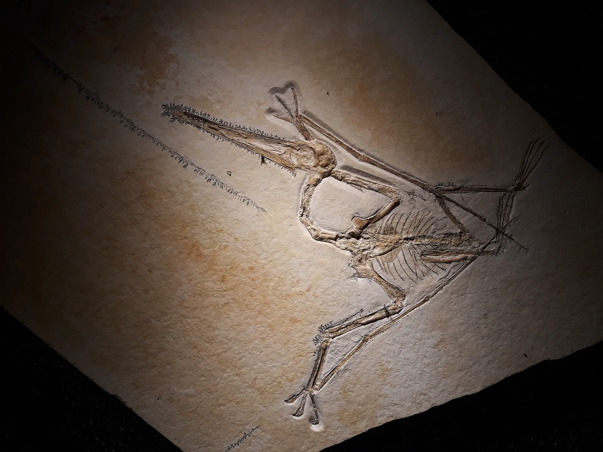
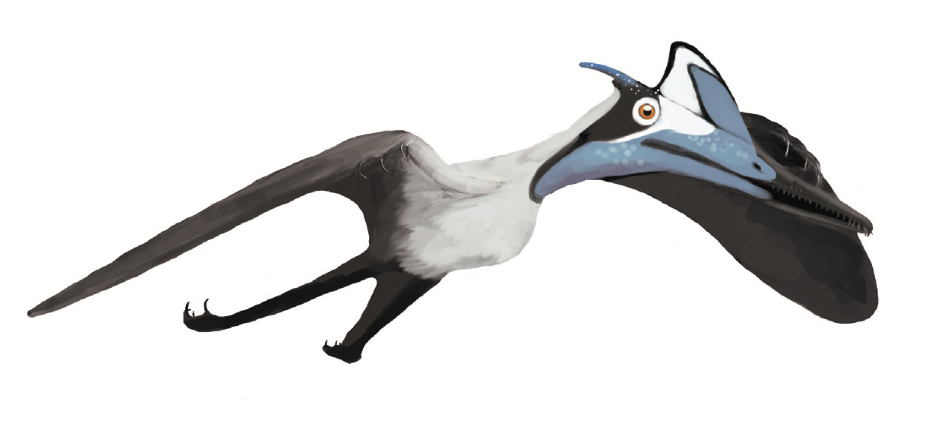

A Solnhofen pterosaur
Pterodactylus
Not Archaeopteryx. A fossil from the same lagoons, and a drawing whose crest is a guess.
Fossil: Dean Falk Schnabel, CC BY-SA 4.0, via Wikimedia Commons. Pterodactylus antiquus from Solnhofen. This is not Archaeopteryx. Fossil file page

TODO machine-draft translation: English for review.
There is no film of this animal made for this site. The picture behind the title is the fossil. The life drawing is 931 pixels wide, so this page does not stretch it across the title.
What we know
- Pterodactylus antiquus is a pterosaur from the Solnhofen lagoons in Bavaria. The Paleobiology Database places the type in the Tithonian, 149.2 to 143.1 million years ago on this map’s scale. This site’s Solnhofen coin rounds those same lagoons to about 150 million years ago. Paleobiology Database, taxon 156644 Bürgermeister-Müller-Museum, Solnhofen
- The photograph behind the title is a fossil from Solnhofen. It is not Archaeopteryx. The original file is 4128 pixels wide. This page serves 1920 pixels wide, not enlarged. Fossil file page
- The drawing below is Matthew Martyniuk’s life restoration of specimen BMMS 7, which he describes as the largest known Pterodactylus antiquus. He writes that the crest shape is based on specimen BSP 1929 and was made speculatively larger for a more mature stage. It is a drawing, not a photograph, and the crest is not a measurement. The file is 931 pixels wide, and this page does not enlarge it. Drawing file page

What this page does not claim
- No wingspan is written on this site’s Solnhofen entry or on the Paleobiology Database page linked here, so this page does not draw a person beside the animal.
- The pin is the Solnhofen Limestone, the same lagoons as Archaeopteryx. It is a place marker made for this site, not a drawing of the pterosaur. Created by the Founder and SI.

Sources (4)
- Paleobiology Database, taxon 156644
- Bürgermeister-Müller-Museum, Solnhofen
- Wikimedia Commons — the Solnhofen fossil photograph, CC BY-SA 4.0
- Wikimedia Commons — the life drawing, CC BY-SA 4.0